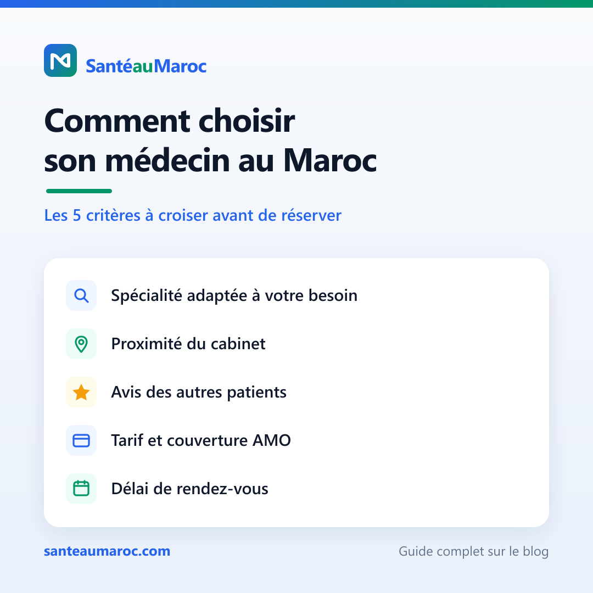
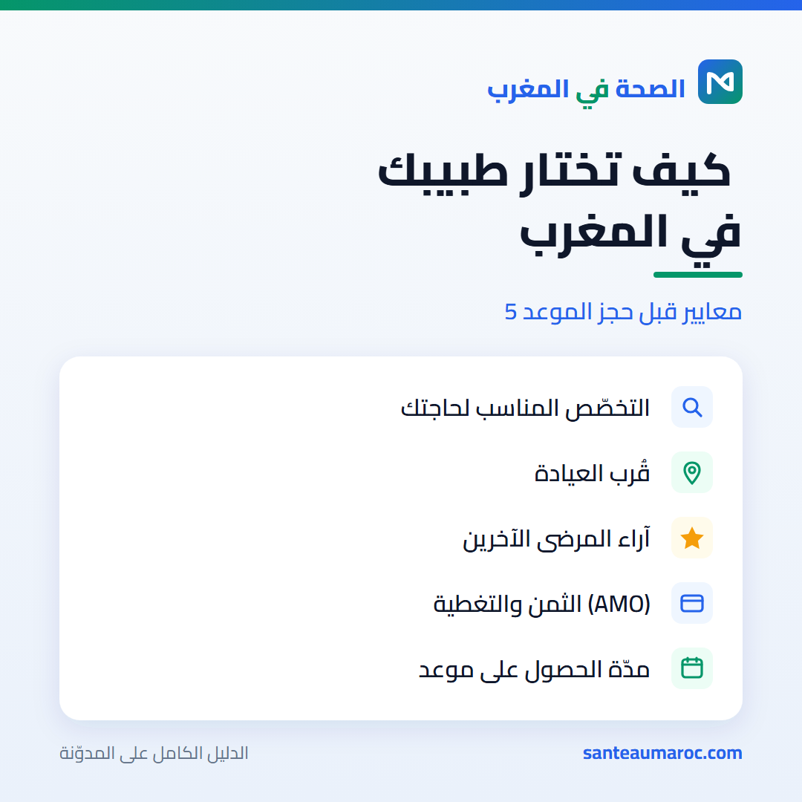

Contenu prêt à publier. Le lien de l'article apparaît uniquement en fin de post.
Français
Post principal
Un patient sur deux choisit son médecin au hasard d'une recommandation ou d'une recherche Google précipitée.
Je l'ai vu de près.
Une proche cherchait un spécialiste pour une douleur qui traînait depuis des semaines. Elle a pris le premier rendez-vous disponible, sans vérifier la spécialité ni les avis. Résultat : une consultation pour rien, du temps perdu, et l'impression de repartir à zéro.
Le vrai problème, c'est que choisir un médecin au Maroc reste flou.
Public ou privé ? Généraliste ou spécialiste direct ? Comment savoir si le praticien est réellement inscrit à l'Ordre ? On avance souvent à l'aveugle, au moment précis où on a le moins de temps et le plus d'inquiétude.
Quelques repères simples changent tout 👇
▪️ Commencer par un généraliste. Dans la majorité des cas, c'est lui qui pose le premier diagnostic et vous oriente au bon endroit.
▪️ Croiser 5 critères avant de réserver : spécialité, proximité, avis patients, tarif + couverture AMO, délai de rendez-vous.
▪️ Vérifier la légitimité du praticien. L'inscription à l'Ordre national des médecins n'est pas un détail.
▪️ Arbitrer public vs privé selon l'urgence. Tarifs bas mais délais longs d'un côté, accès rapide mais plus coûteux de l'autre.
▪️ Préparer sa première consultation : motif clair, antécédents, médicaments en cours, analyses récentes.
Le guide complet détaille chaque étape, avec les questions concrètes à se poser.
Et vous, sur quel critère vous fiez-vous d'abord pour choisir un médecin ?
👉 https://santeaumaroc.com/blog/choisir-son-medecin-maroc
#SantéAuMaroc #SantéMaroc #AccèsAuxSoins #MédecinMaroc #Prévention #eSanté #PatientEmpowerment
العربية
النسخة العربية
مريض من كل اثنين يختار طبيبه بالصدفة، عبر توصية سريعة أو بحث متعجّل على Google.
رأيتُ ذلك عن قرب.
قريبة لي كانت تبحث عن طبيب مختصّ لألمٍ رافقها أسابيع. حجزت أوّل موعد متاح، دون التأكد من التخصّص أو مراجعة آراء المرضى. النتيجة: استشارة بلا فائدة، ووقت ضائع، وشعور بالعودة إلى نقطة الصفر.
المشكلة الحقيقية أنّ اختيار الطبيب في المغرب ما زال غامضًا.
القطاع العام أم الخاص؟ طبيب عام أم مختصّ مباشرةً؟ كيف نتأكّد أنّ الطبيب مسجّل فعلاً في الهيئة الوطنية للأطباء؟ غالبًا نتقدّم في العتمة، في اللحظة التي نملك فيها أقلّ وقتٍ وأكبر قلق.
بعض المعايير البسيطة تُغيّر كلّ شيء 👇
▪️ ابدأ بطبيب عام. في أغلب الحالات هو من يضع التشخيص الأوّل ويوجّهك إلى المكان المناسب.
▪️ اجمع بين 5 معايير قبل الحجز: التخصّص، القرب، آراء المرضى، الثمن والتغطية (AMO)، ومدّة انتظار الموعد.
▪️ تأكّد من شرعية الطبيب. التسجيل في الهيئة الوطنية للأطباء ليس تفصيلًا.
▪️ وازن بين العام والخاص حسب درجة الاستعجال: أثمنة منخفضة لكن آجال طويلة من جهة، وولوج سريع لكن أكثر كلفة من جهة أخرى.
▪️ حضّر استشارتك الأولى: سبب واضح، سوابق مرضية، الأدوية الحالية، والتحاليل الأخيرة.
الدليل الكامل يشرح كلّ خطوة بالأسئلة العملية التي ينبغي طرحها.
وأنت، على أيّ معيار تعتمد أوّلًا لاختيار طبيبك؟
👉 https://santeaumaroc.com/blog/choisir-son-medecin-maroc
#صحتك_بالمغرب #الصحة_بالمغرب #طبيب_بالمغرب #الولوج_للعلاج #الوقاية #الصحة_الرقمية
Français
Visuel FR (1080×1080)

choisir-medecin-5-criteres.png · .svgالعربية
Visuel AR (1080×1080)

choisir-medecin-5-criteres-ar.png · .svg
SantéauMaroc — trouvez le bon médecin, en confiance · santeaumaroc.com